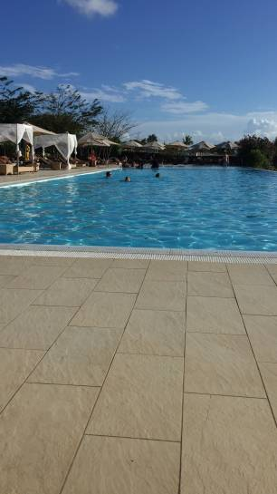
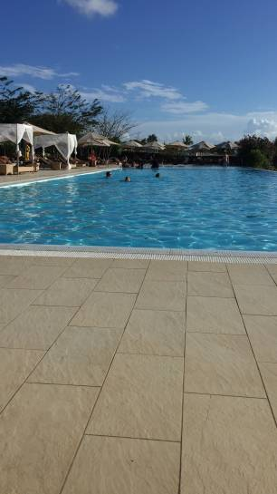

Zanzibar is a Tanzanian archipelago off the coast of East Africa.
On its main island, Unguja, familiarly called Zanzibar, is Stone Town, a historic trade center with Swahili and Islamic influences.
Its winding lanes present minarets,
carved doorways and 19th-century landmarks such as the House of Wonders, a former sultan’s palace.
The northern villages Nungwi and Kendwa have wide beaches lined with hotels.